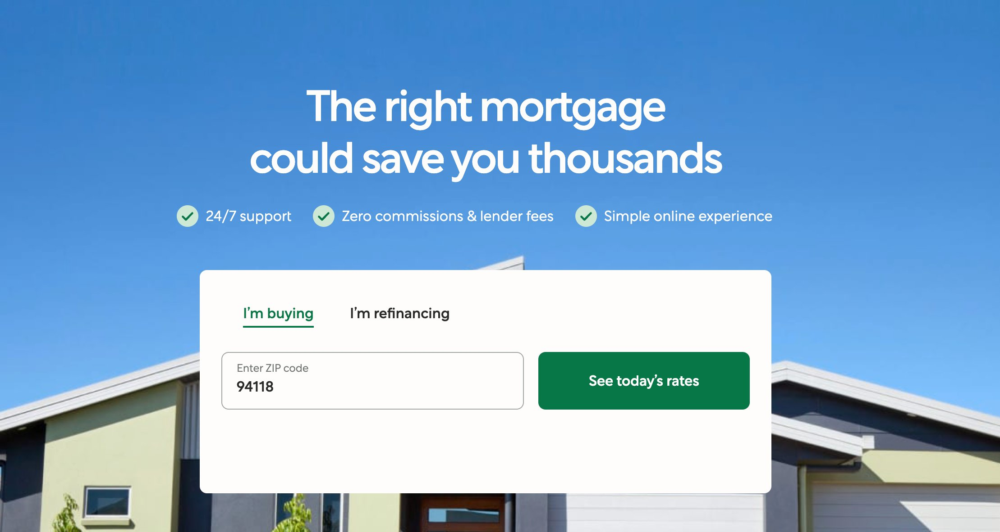
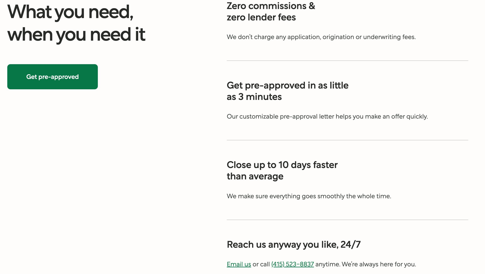
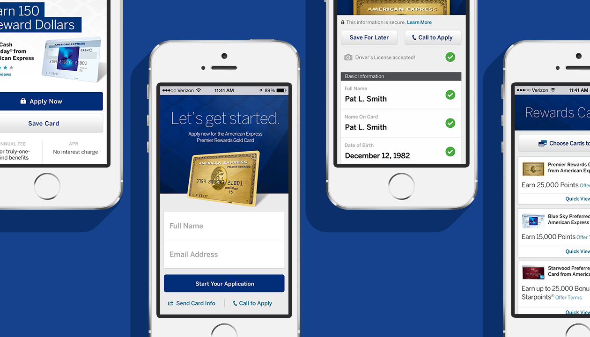
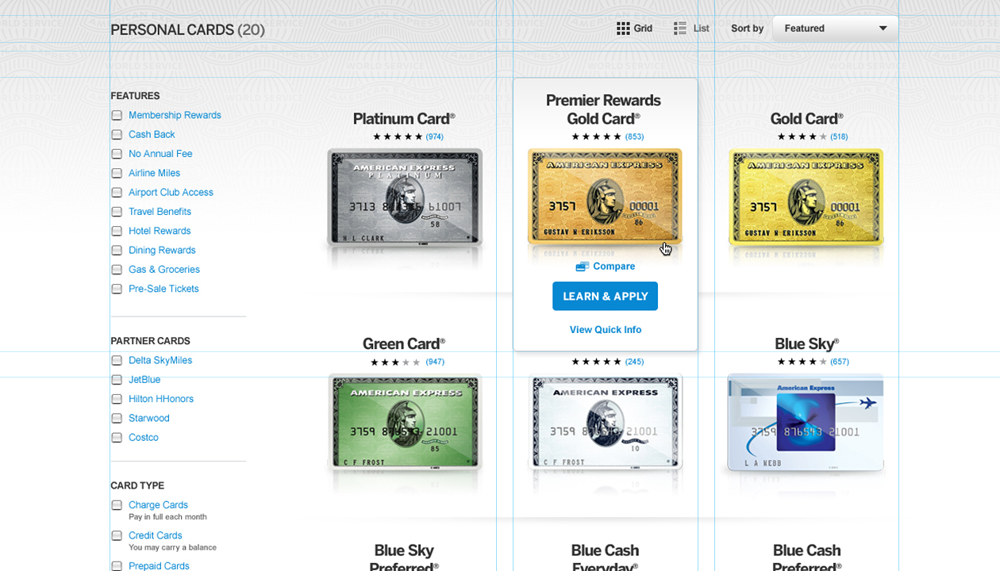
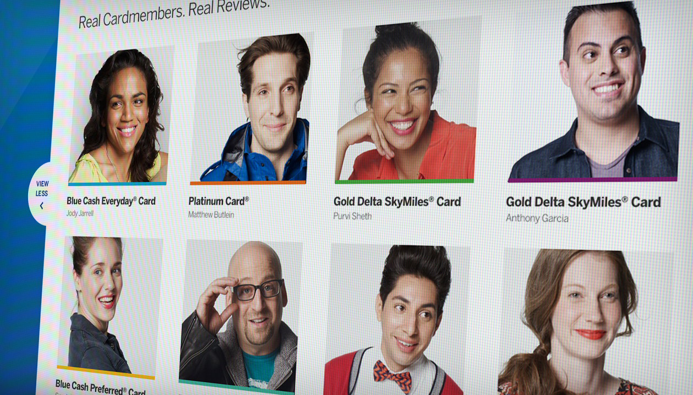
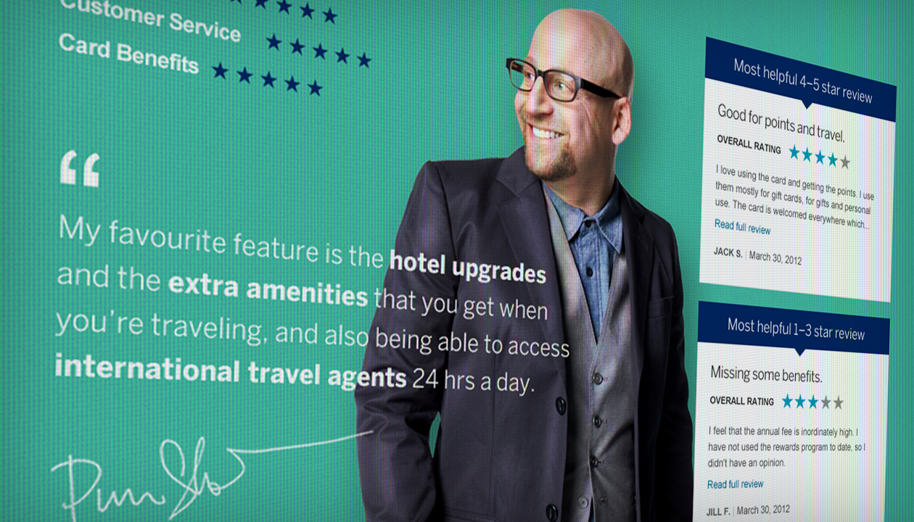
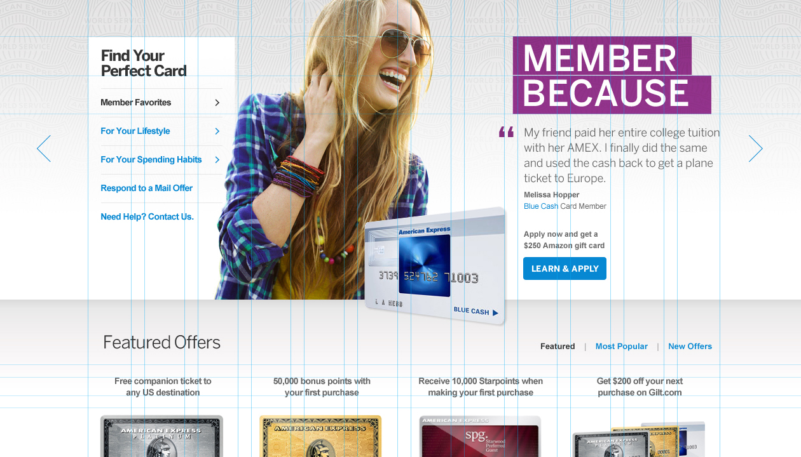
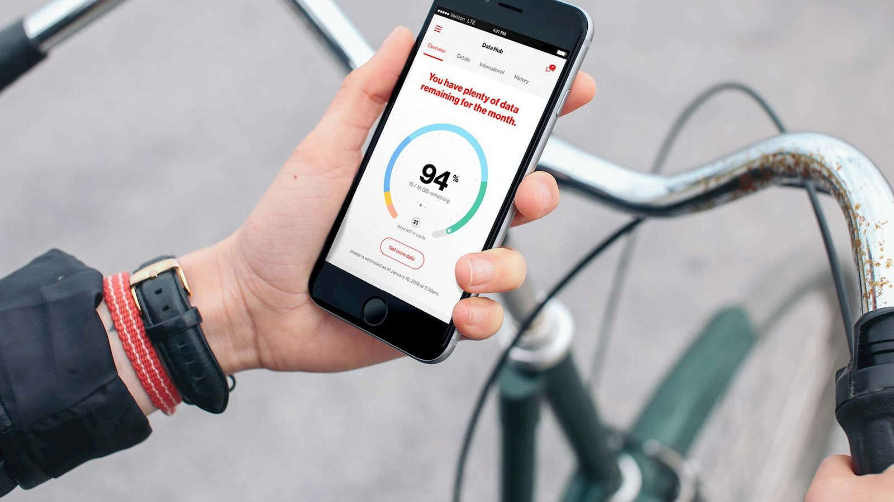
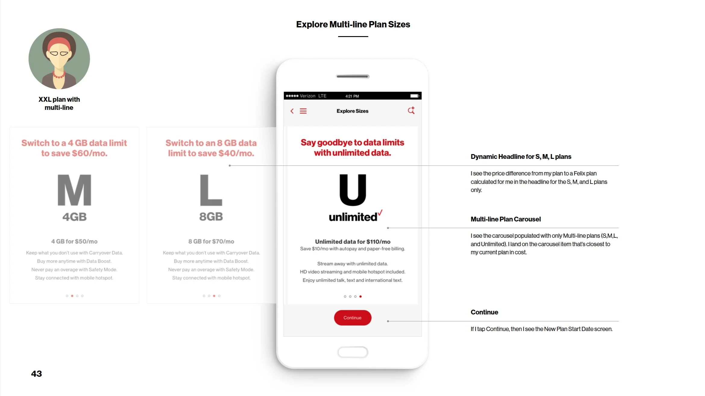

Some of the work of which I'm proudest lives at the product level, the UX journeys for Goldman Sachs, Verizon, American Express, and many others. It's a different craft than snappy headlines, but it follows the same thesis: writing should exist to help someone do a task, as clearly and easily as possible.
I started as a journalist, then moved to brand copywriting. Somewhere along the way, the work shifted: the copy that mattered most wasn't the ad. It was the button, the onboarding flow, the sentence that clarified everything for the user. The brands that take that seriously are the ones I want to work with.
Better was moving one of the most anxiety-inducing financial processes in American life entirely online. I spent a year embedded across onboarding flows, loan application processes, error states, email sequences, and the brand voice system that governed how to sound Better across every surface.


"Your rate is locked. That means it won't change no matter what happens to the market while your loan is processing."
Rate lock confirmation
"This is the part most lenders make complicated. We're going to make it a checklist."
Document upload intro
"We didn't hear back from the underwriter. That's normal — we'll ping them again tomorrow."
Error / delay state
Enterprise financial products are typically written by compliance teams, not communicators, which produces language that is legally accurate and humanly dense. I built the voice and content system for Goldman's Private Wealth Management platform: defining how it should sound across navigation, data display, alerts, onboarding, and error states, and creating the documentation that let a large product team make consistent copy decisions without a writer in every room.
Confident but not cocky. Smart but not stodgy. Helpful but not pushy. Expert but not bossy.
Fewer words always win. Communicate only essential details so clients can focus on their own tasks.
Help, don't apologize. In situations where something went wrong, give a clear explanation and help them fix the issue.
Tell, don't plead. Avoid empty niceties like "please" and "unfortunately." Start with the client need.
The project sat at the intersection of content design and campaign — mobile-first experiences where the copy had to toe the line between UX and marketing. Language decisions were tested against user flow, not just brand guidelines. Copy and content developed in close collaboration with the UX and visual design teams at Huge.





Every word earns its space. On a small screen, there's no room for a second draft.
One of the highest-traffic consumer websites in the United States, serving 113 million customers. The existing site had accumulated years of copy written by different teams with different conventions. I replaced that accumulation with a system — vocabulary, nomenclature standards, and copy patterns governing navigation, product pages, onboarding, support, account management, and transactional messaging across VerizonWireless.com and the MyVerizon app.
Within seven months of launch: mobile sales conversion rose 15.6x. Overall usage up over 50%. Bill payment in-app increased from 68% to 85%. Autopay enrollment up 27%.


"You have plenty of data remaining for the month."
Data hub — positive state headline
"Say goodbye to data limits with unlimited data."
Plan upgrade — unlimited tier CTA
"Switch to a 4 GB data limit to save $60/mo."
Dynamic plan headline — personalized to current plan
Evercore — one of the most respected names in institutional finance — was building for individual investors for the first time. The voice system had to honor institutional credibility while reaching an entirely new audience. I helped build it from zero.
Institutional trust, consumer clarity. Both. Always.
Don't soften institutional language. Replace it.
Formality is a dial, not a setting.
Five voice systems built from zero. Product writing across mortgage, wealth management, telecom, and enterprise finance. More than a decade of turning compliance-written copy into something fit for a human to read.